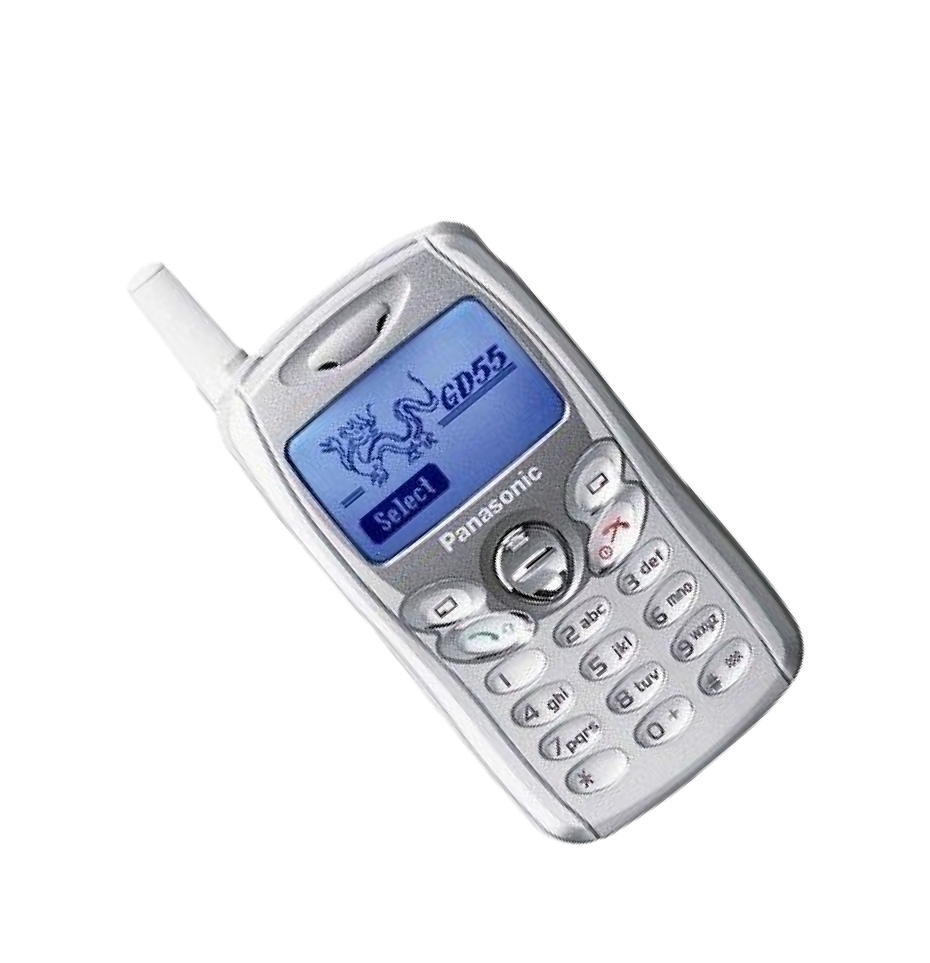
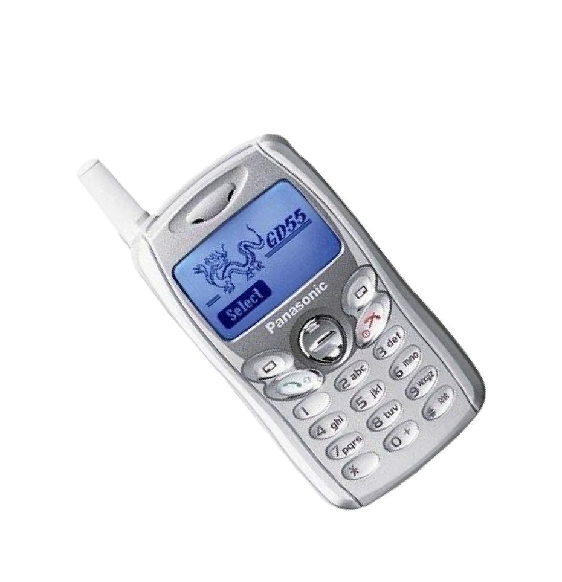
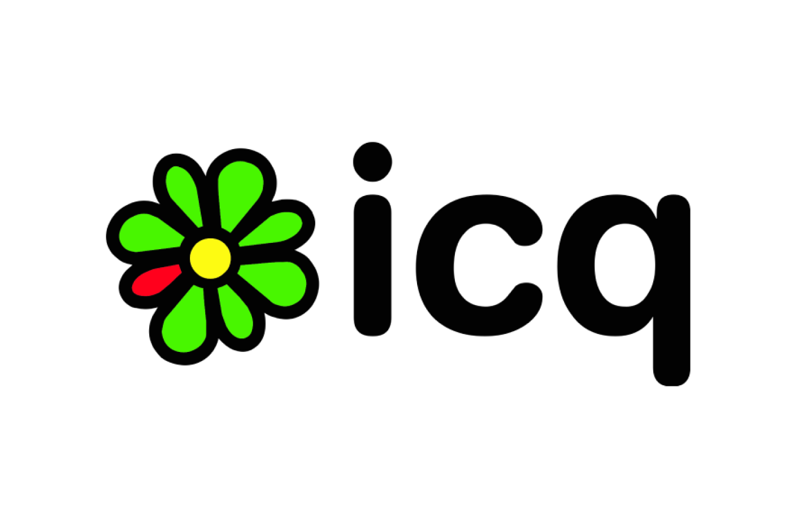
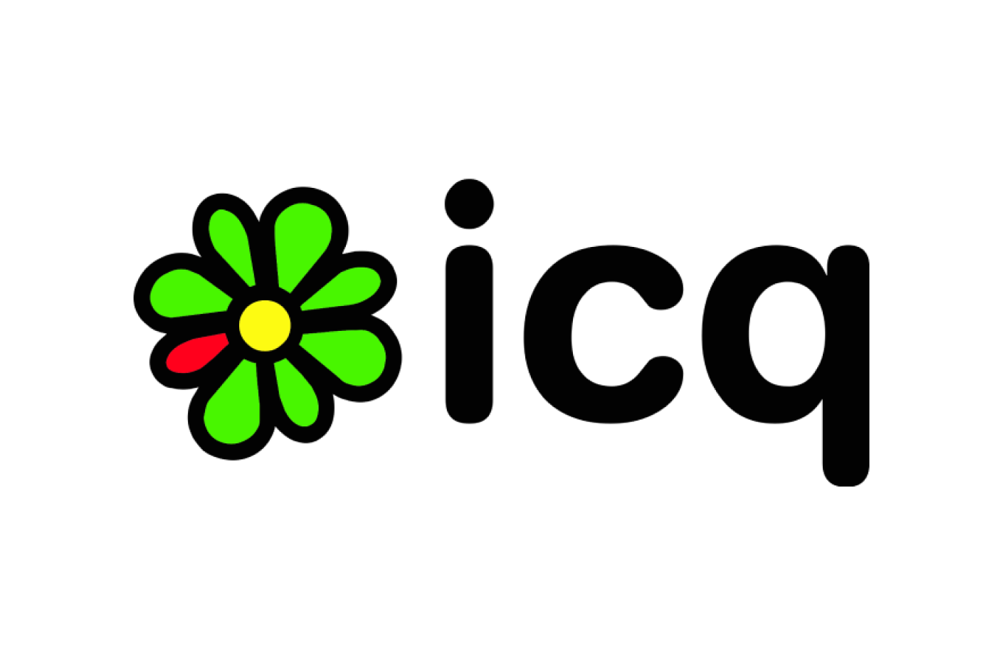

История интернета
в России: от первых дней до сегодняшнего дня


 
 
Интернет в России начал свое развитие в 1980-х годах. Изначально использовался в научных и исследовательских целях.
Интернет использовался также для связи между компьютерами в разных университетах и научных центрах. В 1990-е годы интернет стал доступен для более широкой аудитории. Первые провайдеры в России появились в 1992 году. К началу 2000-х годов интернет стал популярным среди населения.
В 2001 году было создано .ru доменное имя, что позволило создавать сайты с российским адресом в интернете. До этого времени российские сайты использовали зарубежные доменные имена. Сегодня интернет в России является одной из основных частей жизни людей. Он используется для коммуникации, работы, образования, развлечения и многих других целей.

Старый компьютер Мак
Интернет в России начал свое развитие в 1980-х годах. Изначально использовался в научных и исследовательских целях.

Старый компьютер Мак

Печатная машинка
Монитор
Видеокамера
Ipod

Проводные наушники
Интернет, как мы его знаем сегодня, стал доступен только в начале 1990-х годов. Тогда же в России начали создаваться первые сайты и появляться первые поисковики. Среди них был и Яндекс, который зарегистрировали в 1997 году.
К началу 2000-х годов интернет-пользователи получили доступ к более быстрой и более удобной связи. Были созданы первые глобальные интернет-компании, такие как Google и Amazon, которые начали развиваться быстрее, чем представительницы российского интернета.
Печатная
машинка
Монитор
Видеокамера
Ipod
Проводные
наушники
Интернет, как мы его знаем сегодня, стал доступен только в начале 1990-х годов. Тогда же в России начали создаваться первые сайты и появляться первые поисковики. Среди них был и Яндекс, который зарегистрировали в 1997 году.
К началу 2000-х годов интернет-пользователи получили доступ к более быстрой и более удобной связи. Были созданы первые глобальные интернет-компании, такие как Google и Amazon, которые начали развиваться быстрее, чем представительницы российского интернета.
Социальные сети появились в России в 2000-х годах и стали популярны в середине десятилетия.

Одной из первых была «Мой мир» — главное сообщество нового портала «Майл.ру». В 2006 году пользователи начали массово переходить на другую социальную сеть, «ВКонтакте». Это сообщество быстро стало популярным благодаря возможности обмена музыкой и видео, а также играми. Со временем в России появилось множество других социальных сетей, таких как «Одноклассники», «Фейсбук» и «Твиттер». С начала 2010-х годов мессенджеры стали все более популярными в России. Один из первых был «ICQ», который по-прежнему используют многие пользователи.


Социальные сети появились в России в 2000-х годах и стали популярны в середине десятилетия.
Одной из первых была «Мой мир» — главное сообщество нового портала «Майл.ру». В 2006 году пользователи начали массово переходить на другую социальную сеть, «ВКонтакте». Это сообщество быстро стало популярным благодаря возможности обмена музыкой и видео, а также играми. Со временем в России появилось множество других социальных сетей, таких как «Одноклассники», «Фейсбук» и «Твиттер». С начала 2010-х годов мессенджеры стали все более популярными в России. Один из первых был «ICQ», который по-прежнему используют многие пользователи.
 


Социальные сети появились в России
в 2000-х годах и стали популярны
в середине десятилетия.
Одной из первых была «Мой мир» — главное сообщество нового портала «Майл.ру». В 2006 году пользователи начали массово переходить на другую социальную сеть, «ВКонтакте». Это сообщество быстро стало популярным благодаря возможности обмена музыкой и видео, а также играми. Со временем в России появилось множество других социальных сетей, таких как «Одноклассники», «Фейсбук» и «Твиттер». С начала 2010-х годов мессенджеры стали все более популярными в России. Один из первых был «ICQ», который по-прежнему используют многие пользователи.


Смартфон Iphone
С развитием технологий в России появилась возможность использовать мобильный интернет прямо со своего смартфона. Это стало возможным благодаря расширению мобильной связи и созданию специальных тарифов для смартфонов. Сейчас мобильный интернет стал неотъемлемой частью жизни людей в России. С его помощью можно читать новости, общаться в социальных сетях, заказывать еду и товары, смотреть фильмы и сериалы, играть в игры и многое другое.
Наряду с развитием мобильного интернета, смартфоны стали незаменимыми устройствами в повседневной жизни. Они облегчают задачи работы и позволяют оставаться на связи в любых условиях. Сейчас существует огромное количество моделей смартфонов разных брендов, начиная от бюджетных до дорогостоящих. Они превратились в настоящие мультимедийные центры, способные заменить компьютеры для большинства задач. Смартфоны и мобильный интернет стали частью нашей жизни и продолжают активно развиваться.
Старый мобильный телефон

Мобильный телефон Nokia
Смартфон Samsung

Смартфон Iphone

Старый мобильный телефон

Мобильный телефон Nokia

Смартфон Samsung


Интернет в России продолжает развиваться со скоростью, которая удивляет мир.
Nintendo
Интернет вещей — это одно из главных направлений развития технологий. Российские IT-компании уже работают над созданием сенсоров, устройств связи, оснащенных системами искусственного интеллекта, а также роботов-помощников для дома и бизнеса. Это позволит открыть новые возможности для оптимизации бизнеса, повысить уровень удобства и безопасности жизни человека.
Развитие Интернета в регионах — еще одно направление, которому следует уделить внимание. На сегодняшний день до сих пор существует белые пятна на карте России, где Интернет соединение плохо. Но с развитием технологий этот проблемный вопрос будет устранен. Кроме того, будет расширяться спектр услуг в Интернете: онлайн-магазины, онлайн-школы, онлайн-медицина. Но одного развития технологий недостаточно. Важным фактором является привлечение талантов, идей, новых проектов и стартапов.